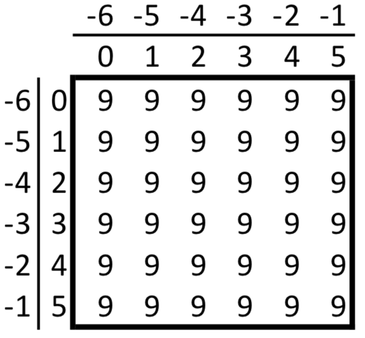

NumPy Basics
Overview
NumPy is the fundamental package for scientific computing with Python. It contains among other things:
a powerful N-dimensional array object
sophisticated (broadcasting) functions
useful linear algebra, Fourier transform, and random number capabilities
The NumPy array object is the common interface for working with typed arrays of data across a wide-variety of scientific Python packages. NumPy also features a C-API, which enables interfacing existing Fortran/C/C++ libraries with Python and NumPy. In this notebook we will cover
Creating an
arrayMath and calculations with arrays
Inspecting an array with slicing and indexing
Prerequisites
Concepts |
Importance |
Notes |
|---|---|---|
Necessary |
Lists, indexing, slicing, math |
Time to learn: 35 minutes
Imports
A common convention you might encounter is to rename numpy to np on import to shorten it for the many times we will be calling on numpy for functionality.
import numpy as np
Create an array of ‘data’
The NumPy array represents a contiguous block of memory, holding entries of a given type (and hence fixed size). The entries are laid out in memory according to the shape, or list of dimension sizes. Let’s start by creating an array from a list of integers and taking a look at it,
a = np.array([1, 2, 3])
a
array([1, 2, 3])
We can inspect the number of dimensions our array is organized along with ndim, and how long each of these dimensions are with shape
a.ndim
1
a.shape
(3,)
So our 1-dimensional array has a shape of 3 along that dimension! Finally we can check out the underlying type of our underlying data,
a.dtype
dtype('int64')
Now, let’s expand this with a new data type, and by using a list of lists we can grow the dimensions of our array!
a = np.array([[1.0, 2.0, 3.0], [4.0, 5.0, 6.0]])
a
array([[1., 2., 3.],
[4., 5., 6.]])
a.ndim
2
a.shape
(2, 3)
a.dtype
dtype('float64')
And as before we can use ndim, shape, and dtype to discover how many dimensions of what lengths are making up our array of floats.
Generation
NumPy also provides helper functions for generating arrays of data to save you typing for regularly spaced data. Don’t forget your Python indexing rules!
arange(start, stop, step)creates a range of values in the interval[start,stop)withstepspacing.linspace(start, stop, num)creates a range ofnumevenly spaced values over the range[start,stop].
arange
a = np.arange(5)
a
array([0, 1, 2, 3, 4])
a = np.arange(3, 11)
a
array([ 3, 4, 5, 6, 7, 8, 9, 10])
a = np.arange(1, 10, 2)
a
array([1, 3, 5, 7, 9])
linspace
b = np.linspace(0, 4, 5)
b
array([0., 1., 2., 3., 4.])
b.shape
(5,)
b = np.linspace(3, 10, 15)
b
array([ 3. , 3.5, 4. , 4.5, 5. , 5.5, 6. , 6.5, 7. , 7.5, 8. ,
8.5, 9. , 9.5, 10. ])
b = np.linspace(2.5, 10.25, 11)
b
array([ 2.5 , 3.275, 4.05 , 4.825, 5.6 , 6.375, 7.15 , 7.925,
8.7 , 9.475, 10.25 ])
b = np.linspace(0, 100, 30)
b
array([ 0. , 3.44827586, 6.89655172, 10.34482759,
13.79310345, 17.24137931, 20.68965517, 24.13793103,
27.5862069 , 31.03448276, 34.48275862, 37.93103448,
41.37931034, 44.82758621, 48.27586207, 51.72413793,
55.17241379, 58.62068966, 62.06896552, 65.51724138,
68.96551724, 72.4137931 , 75.86206897, 79.31034483,
82.75862069, 86.20689655, 89.65517241, 93.10344828,
96.55172414, 100. ])
Perform calculations with NumPy
Arithmetic
In core Python, that is without NumPy, creating sequences of values and adding them together requires writing a lot of manual loops, just like one would do in C/C++:
a = list(range(5, 10))
b = [3 + i * 1.5 / 4 for i in range(5)]
a, b
([5, 6, 7, 8, 9], [3.0, 3.375, 3.75, 4.125, 4.5])
result = []
for x, y in zip(a, b):
result.append(x + y)
print(result)
[8.0, 9.375, 10.75, 12.125, 13.5]
That is very verbose and not very intuitive. Using NumPy this becomes:
a = np.arange(5, 10)
b = np.linspace(3, 4.5, 5)
a + b
array([ 8. , 9.375, 10.75 , 12.125, 13.5 ])
Many major mathematical operations operate in the same way. They perform an element-by-element calculation of the two arrays.
a - b
array([2. , 2.625, 3.25 , 3.875, 4.5 ])
a / b
array([1.66666667, 1.77777778, 1.86666667, 1.93939394, 2. ])
a**b
array([ 125. , 422.92218768, 1476.10635524, 5311.85481585,
19683. ])
Warning
These arrays must be the same shape!
b = np.linspace(3, 4.5, 6)
a.shape, b.shape
((5,), (6,))
a * b
---------------------------------------------------------------------------
ValueError Traceback (most recent call last)
Cell In[26], line 1
----> 1 a * b
ValueError: operands could not be broadcast together with shapes (5,) (6,)
Constants
NumPy provides us access to some useful constants as well - remember you should never be typing these in manually! Other libraries such as SciPy and MetPy have their own set of constants that are more domain specific.
np.pi
3.141592653589793
np.e
2.718281828459045
You can use these for classic calculations you might be familiar with! Here we can create a range t = [0, 2 pi] by pi/4,
t = np.arange(0, 2 * np.pi + np.pi / 4, np.pi / 4)
t
array([0. , 0.78539816, 1.57079633, 2.35619449, 3.14159265,
3.92699082, 4.71238898, 5.49778714, 6.28318531])
t / np.pi
array([0. , 0.25, 0.5 , 0.75, 1. , 1.25, 1.5 , 1.75, 2. ])
Array math functions
NumPy also has math functions that can operate on arrays. Similar to the math operations, these greatly simplify and speed up these operations. Let’s start with calculating \(\sin(t)\)!
sin_t = np.sin(t)
sin_t
array([ 0.00000000e+00, 7.07106781e-01, 1.00000000e+00, 7.07106781e-01,
1.22464680e-16, -7.07106781e-01, -1.00000000e+00, -7.07106781e-01,
-2.44929360e-16])
and clean it up a bit by rounding to three decimal places.
np.round(sin_t, 3)
array([ 0. , 0.707, 1. , 0.707, 0. , -0.707, -1. , -0.707,
-0. ])
cos_t = np.cos(t)
cos_t
array([ 1.00000000e+00, 7.07106781e-01, 6.12323400e-17, -7.07106781e-01,
-1.00000000e+00, -7.07106781e-01, -1.83697020e-16, 7.07106781e-01,
1.00000000e+00])
Info
Check out NumPy’s list of mathematical functions here!
We can convert between degrees and radians with only NumPy, by hand
t / np.pi * 180
array([ 0., 45., 90., 135., 180., 225., 270., 315., 360.])
or with built-in function rad2deg,
degrees = np.rad2deg(t)
degrees
array([ 0., 45., 90., 135., 180., 225., 270., 315., 360.])
We are similarly provided algorithms for operations including integration, bulk summing, and cumulative summing.
sine_integral = np.trapz(sin_t, t)
np.round(sine_integral, 3)
-0.0
cos_sum = np.sum(cos_t)
cos_sum
0.9999999999999996
cos_csum = np.cumsum(cos_t)
print(cos_csum)
[ 1.00000000e+00 1.70710678e+00 1.70710678e+00 1.00000000e+00
0.00000000e+00 -7.07106781e-01 -7.07106781e-01 -5.55111512e-16
1.00000000e+00]
Indexing and subsetting arrays
Indexing
We can use integer indexing to reach into our arrays and pull out individual elements. Let’s make a toy 2-d array to explore. Here we create a 12-value arange and reshape it into a 3x4 array.
a = np.arange(12).reshape(3, 4)
a
array([[ 0, 1, 2, 3],
[ 4, 5, 6, 7],
[ 8, 9, 10, 11]])
Recall that Python indexing starts at 0, and we can begin indexing our array with the list-style list[element] notation,
a[0]
array([0, 1, 2, 3])
to pull out just our first row of data within a. Similarly we can index in reverse with negative indices,
a[-1]
array([ 8, 9, 10, 11])
to pull out just the last row of data within a. This notation extends to as many dimensions as make up our array as array[m, n, p, ...]. The following diagram shows these indices for an example, 2-dimensional 6x6 array,

For example, let’s find the entry in our array corresponding to the 2nd row (m=1 in Python) and the 3rd column (n=2 in Python)
a[1, 2]
6
We can again use these negative indices to index backwards,
a[-1, -1]
11
and even mix-and-match along dimensions,
a[1, -2]
6
Slices
Slicing syntax is written as array[start:stop[:step]], where all numbers are optional.
defaults:
start = 0
stop = len(dim)
step = 1
The second colon is also optional if no step is used.
Let’s pull out just the first row, m=0 of a and see how this works!
b = a[0]
b
array([0, 1, 2, 3])
Laying out our default slice to see the entire array explicitly looks something like this,
b[0:4:1]
array([0, 1, 2, 3])
where again, these default values are optional,
b[::]
array([0, 1, 2, 3])
and even the second : is optional
b[:]
array([0, 1, 2, 3])
Now to actually make our own slice, let’s select all elements from m=0 to m=2
b[0:2]
array([0, 1])
Warning
Slice notation is exclusive of the final index.
This means that slices will include every value up to your stop index and not this index itself, like a half-open interval [start, end). For example,
b[3]
3
reveals a different value than
b[0:3]
array([0, 1, 2])
Finally, a few more examples of this notation before reintroducing our 2-d array a.
b[2:] # m=2 through the end, can leave off the number
array([2, 3])
b[:3] # similarly, the same as our b[0:3]
array([0, 1, 2])
Multidimensional slicing
This entire syntax can be extended to each dimension of multidimensional arrays.
a
array([[ 0, 1, 2, 3],
[ 4, 5, 6, 7],
[ 8, 9, 10, 11]])
First let’s pull out rows 0 through 2, and then every : column for each of those
a[0:2, :]
array([[0, 1, 2, 3],
[4, 5, 6, 7]])
Similarly, let’s get all rows for just column 2,
a[:, 2]
array([ 2, 6, 10])
or just take a look at the full row :, for every second column, ::2,
a[:, ::2]
array([[ 0, 2],
[ 4, 6],
[ 8, 10]])
For any shape of array, you can use ... to capture full slices of every non-specified dimension. Consider the 3-D array,
c = a.reshape(2, 2, 3)
c
array([[[ 0, 1, 2],
[ 3, 4, 5]],
[[ 6, 7, 8],
[ 9, 10, 11]]])
c[0, ...]
array([[0, 1, 2],
[3, 4, 5]])
and so this is equivalent to
c[0, :, :]
array([[0, 1, 2],
[3, 4, 5]])
for extracting every dimension across our first row. We can also flip this around,
c[..., -1]
array([[ 2, 5],
[ 8, 11]])
to investigate every preceding dimension along our the last entry of our last axis, the same as c[:, :, -1].
Summary
In this notebook we introduced NumPy and the ndarray that is so crucial to the entirety of the scientific Python community ecosystem. We created some arrays, used some of NumPy’s own mathematical functions to manipulate them, and then introduced the world of NumPy indexing and selecting for even multi-dimensional arrays.